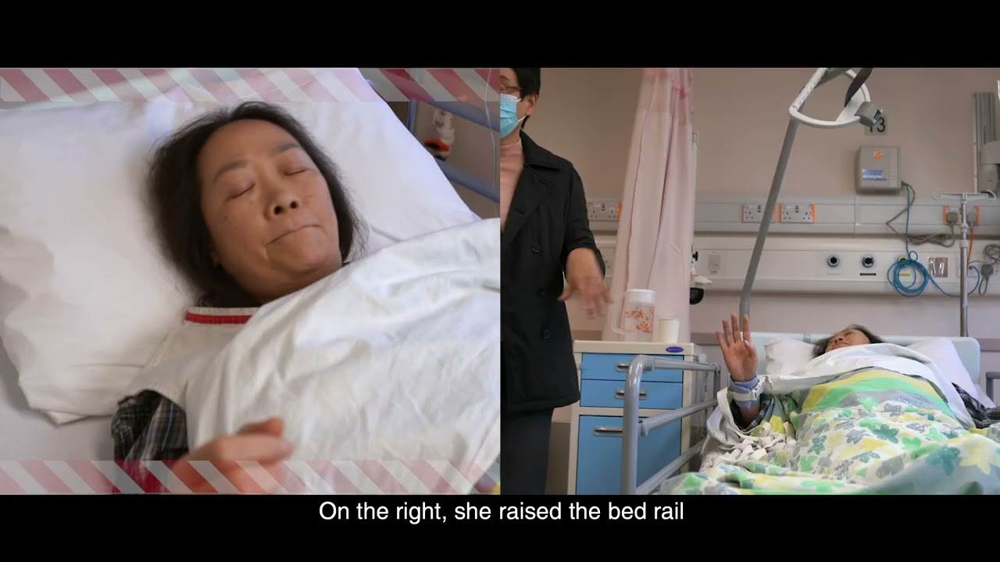
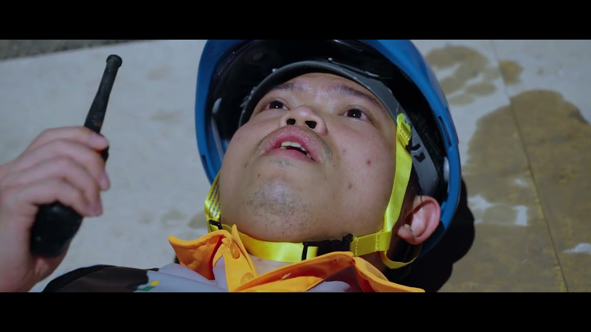
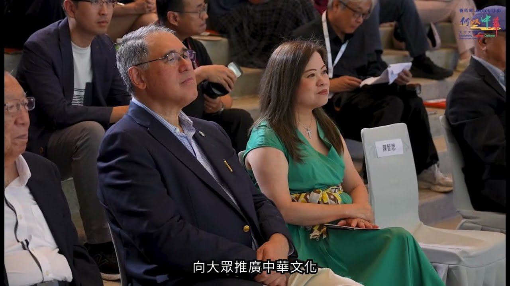
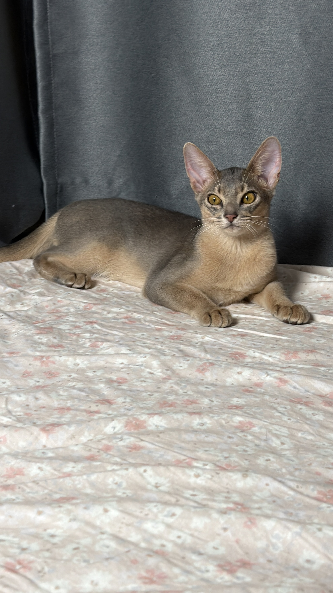
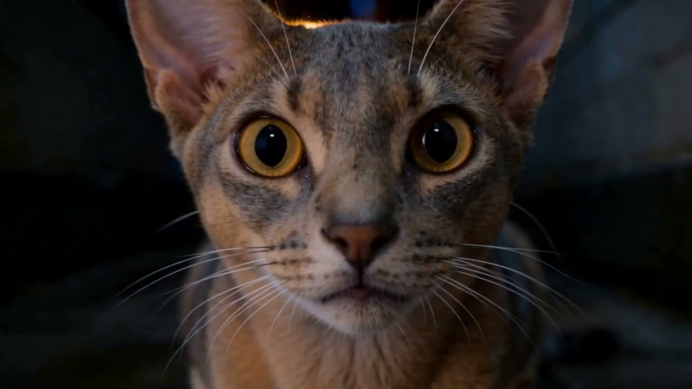
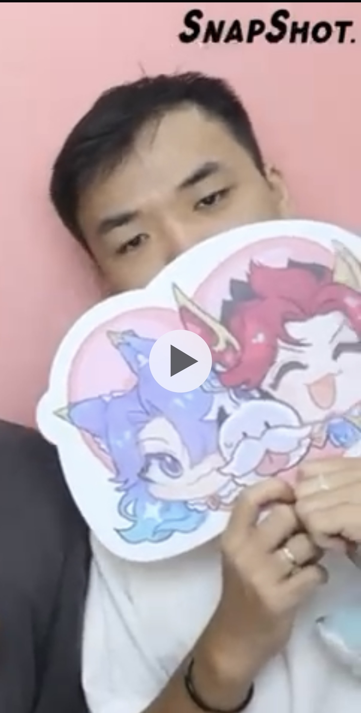

Director · DOP · Filmmaker
導演 | 副導演 | 影像製作人
資深影視製作人，具備超過 8 年電視及電影製作實戰經驗。曾長期服務於 ViuTV 及 TVB，2025 年起成立個人工作室，專注於劇情短片、人物專訪、政府／機構宣傳及商業影像製作。Owner-Operator of Sony FX6 & FX3。
Selected Works

CommercialMedical Education
導演
以寫實且具情感溫度的手法處理醫療教育題材，透過引導演員演出，提升訊息的共鳴感。

GovernmentGovernment · Safety
導演
以劇情片形式包裝工業安全課題，將專業守則轉化為具吸引力且易於理解的影像故事。

EventEvent · Youth
導演 · 攝影 · 剪接
為賽馬會青少年活動製作的活動宣傳影像，捕捉現場氣氛與參加者神態，剪輯成具感染力的紀錄片。
Other Works
副導演 (Assistant Director) · Fashion Film & Interview
協助電影廣告導演完成具備濃烈藝術色彩的國際 IP 製作。負責現場調度與執行，確保影像美學對接國際規格。
導演 / 製作
透過鏡頭語言呈現節慶氛圍，展現品牌形象影片的視覺美學與節奏掌控。
Making Of 導演 / 宣傳影片製作
負責劇集幕後紀錄及線上推廣內容，透過捕捉片場動態與訪談，轉化為吸引觀眾的宣傳影像。
Making Of 導演 · 攝影 · 剪接
負責電影幕後紀錄及社交媒體宣傳製作，在快節奏的電影現場捕捉關鍵時刻，針對社群平台特性進行剪輯。
AI Visual
以真實寵物為基底，透過 AI 還原毛色、神態與動作，探索實拍與 AI 結合的影像製作可能。由真實素材出發，控制生成方向，而非單純文字生成。


Production Credits
副導演 (Assistant Director / 2nd AD) · 2017–2024
ViuTV
TVB
About

資深影視製作人，具備超過 8 年電視及電影製作實戰經驗。曾長期服務於 ViuTV 及 TVB，深度參與多部大型劇集之拍攝統籌及宣傳製作。
2025 年起成立個人工作室，轉型為獨立製作人及導演，專注於劇情短片、人物專訪、政府 / 機構宣傳及具藝術感之商業影像。
身為 Owner-Operator，熟悉由前期籌劃、現場執導到後期剪接的完整製作流程，擅長處理具情感張力的敘事題材，並能穩定拿捏影像美學。
📷 Owner-Operator of Sony FX6 & FX3 · Arri · RED · A7 Series